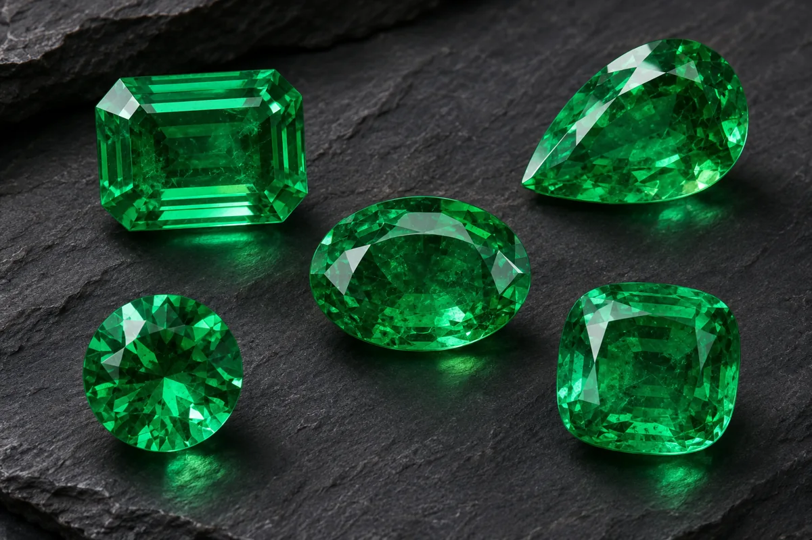

01
Comprender la tasación
Reconocer el concepto de tasación aplicado al ámbito gemológico.
Introducción a los principios de tasación, valoración y análisis de los factores que influyen en el valor de las gemas y piezas gemológicas.
Registro personal de lectura en este navegador; no equivale a una calificación ni se sincroniza con Classroom.

El Módulo 06 introduce al estudiante en los conceptos fundamentales relacionados con la tasación y valoración de gemas y materiales gemológicos.
La valoración requiere considerar diferentes características de una gema, además de aspectos relacionados con su calidad, condición, características comerciales y contexto de valoración.
El objetivo es que el estudiante comprenda que el valor de una gema no depende de un único factor, sino de la interacción de diferentes variables que deben ser analizadas de manera sistemática.
La identificación y caracterización de una gema constituyen una base importante para cualquier proceso posterior de valoración.
Al finalizar este módulo, el estudiante podrá comprender los conceptos básicos asociados con la tasación y valoración de materiales gemológicos.
Reconocer el concepto de tasación aplicado al ámbito gemológico.
Reconocer las características que pueden influir en la valoración de una gema.
Relacionar las características gemológicas con el proceso de valoración.
Reconocer la importancia del contexto y del mercado en determinados procesos de valoración.
El módulo presenta los conceptos necesarios para comprender un proceso básico de valoración gemológica.
Conceptos fundamentales relacionados con la tasación y valoración de materiales gemológicos.
Importancia de identificar y caracterizar correctamente el material antes de realizar una valoración.
Análisis de características relacionadas con la calidad y apariencia de la gema.
Importancia de considerar la condición del material y los tratamientos conocidos.
Consideraciones relacionadas con el contexto comercial y las características del mercado.
Elementos que pueden formar parte de un proceso documentado de valoración.
Como referencia didáctica, el proceso puede organizarse en diferentes etapas que permitan recopilar y analizar la información disponible sobre la gema.
Determinar qué material gemológico está siendo analizado.
Registrar propiedades y características relevantes de la gema.
Recopilar información, antecedentes, tratamientos y documentación disponible.
Evaluar las características que pueden influir en la valoración.
Integrar la información obtenida dentro del contexto específico de la valoración.
Presentar de forma organizada los resultados y fundamentos del proceso realizado.
La valoración puede considerar múltiples características. Su importancia dependerá del tipo de material, propósito de la valoración y contexto correspondiente.
La especie o variedad gemológica constituye un elemento fundamental de caracterización.
El color y sus características pueden tener una influencia importante en determinados materiales.
La presencia, naturaleza y características de inclusiones pueden ser relevantes para determinados materiales.
La calidad y características de la talla pueden influir en la apariencia y desempeño óptico de una gema.
El peso y las dimensiones pueden constituir variables relevantes en determinados procesos de valoración.
La existencia de tratamientos conocidos debe considerarse dentro del análisis correspondiente.
Conceptos esenciales, ejemplo aplicado, actividad de estudio, preguntas con respuestas y referencias de consulta.
Material académico correspondiente al Módulo 06 del Curso de Gemología.
El material académico debe configurarse en Google Drive con permisos de visualización para los estudiantes.
El estudiante deberá analizar un caso de estudio suministrado por el curso, identificar sus características relevantes y organizar la información necesaria para realizar un ejercicio básico de valoración.
Consultar actividades en Classroom ↗Una vez revisado el material y desarrollada la actividad, el estudiante podrá realizar la evaluación correspondiente al Módulo 06.
La lectura puede marcarse al terminar la consulta del contenido. Esta marca personal no sustituye las actividades ni la evaluación docente.